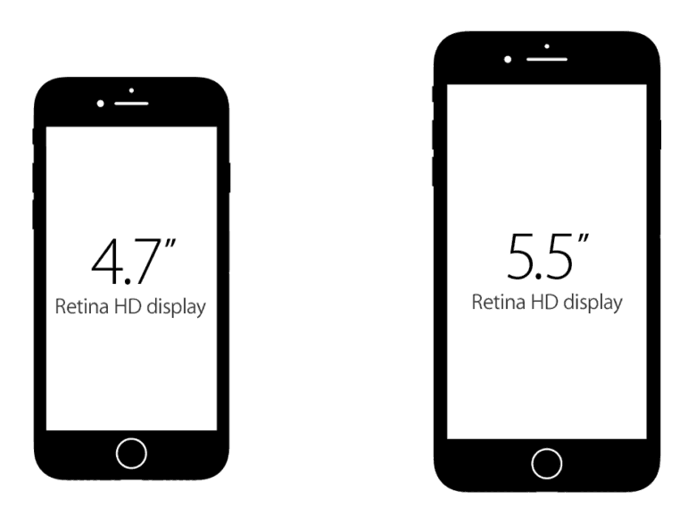

Новый Iphone7
 Дисплей Retina HD. Широкоформатный дисплей с диагональю 5,5 дюйма и подсветкой LED. Multi-Touch с технологией IPS. 1920x1080 пикселей, 401 пиксель/дюйм. Контрастность 1300:1 (стандартная) Диагональ экрана iPhone 7 – 4,7 дюйма, iPhone 7 Plus – 5,5 дюймов. Дисплеи стали на 25 процентов ярче. В первом случае разрешение 1344 х 750 пикселей, а во втором – 1920 х 1080 пикселей. То есть этот параметр не изменился. Как и предполагалось, компания Apple отказалась от mini Jack в новых iPhone. Переходник с Lightning на 3,5-мм разъем будет идти в комплекте. Что касается стандартных EarPods, то они теперь будут с Lightning. Отдельно нам показали и беспроводные AirPods, которые от одного заряда смогут прожить до пяти часов. Такое решение закрывает вопрос «Как же я буду одновременно слушать музыку и заряжать смартфон?» навсегда. Также AirPods оснащены отдельным чипом W1. iPhone 7 и iPhone 7 Plus получили 4-ядерные чипы Apple A10, которые на 40 процентов быстрее A9. Два ядра мощные, а два чуть слабее – лучшее решение для энергоэффективности. Что касается новой графики, то она стала стала на 50 процентов круче (то есть тоже быстрее). Также купертиновцы улучшили и автономность: в режиме 3G браузинга iPhone 7 будет жить до 12 часов, а iPhone 7 Plus – до 13 часов. Уже по традиции о конкретной емкости аккумуляторов на презентации нам не говорят, поэтому ждем, когда новинки попадут в руки специалистам и они их разберут. Единственная и неповторимая кнопка “Домой” обзавелась новой полезной функцией жестов, которая найдет у каждого свои применения. По сути, это больше не кнопка, это тач, который распознает свайпы по нему и силу нажатия технологией Force Touch, как тачпад в Макбуках. Радуйтесь те, у кого кнопка “Домой”, часто приходила в негодность, больше Вам не придется ее ремонтировать и менять в ремонтных. Новый механизм не будет иметь таких проблем, по крайней мере, частых.Да и вообще, с такой кнопкой айфоном станет еще удобнее и быстрее управлять. https://www.apple.com/ru/iphone-7/